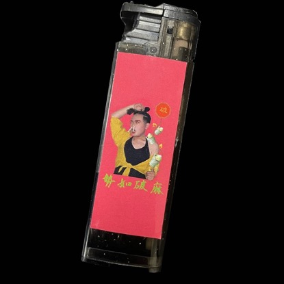

活動理念
根據明代李時珍記載，檳榔兩字源於「賓與郎」，是用來招待「貴賓」跟「新郎」的貴氣食品，對臺灣阿美族來說也有重要的交際意義。
他們會在祭典中把色彩繽紛的情人袋（檳榔袋）背在身上，以輕拉對方的情人袋或將檳榔放入對方情人袋的方式來表達愛意。
史料的考察中，我們看見了檳榔重要的文化意義，希望將這份檳榔情人袋的交際意義繼續傳承下去，結合檳榔西施、試吃活動與獨立樂團表演等，創造檳榔的嶄新價值。
根據明代李時珍記載，檳榔兩字源於「賓與郎」，是用來招待「貴賓」跟「新郎」的貴氣食品，對臺灣阿美族來說也有重要的交際意義。
他們會在祭典中把色彩繽紛的情人袋（檳榔袋）背在身上，以輕拉對方的情人袋或將檳榔放入對方情人袋的方式來表達愛意。
史料的考察中，我們看見了檳榔重要的文化意義，希望將這份檳榔情人袋的交際意義繼續傳承下去，結合檳榔西施、試吃活動與獨立樂團表演等，創造檳榔的嶄新價值。
結合檳榔文化之文創商品
